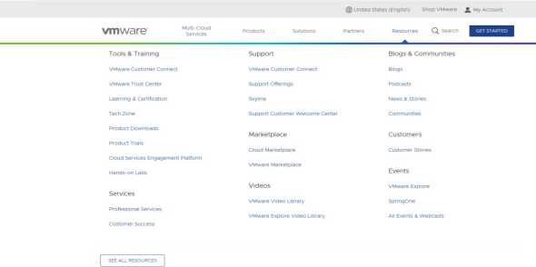
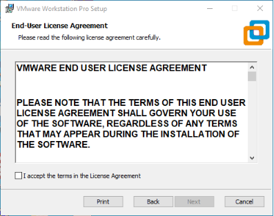
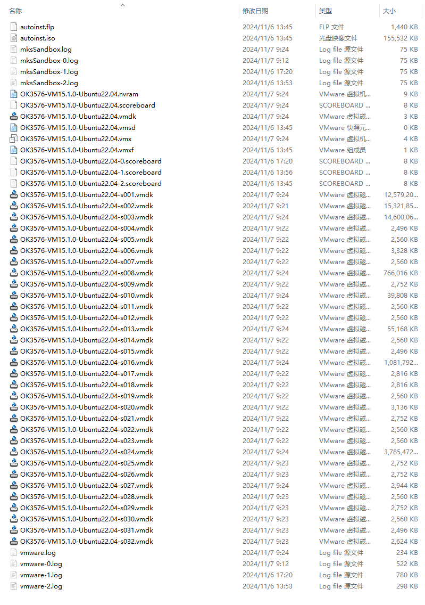
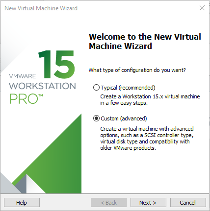
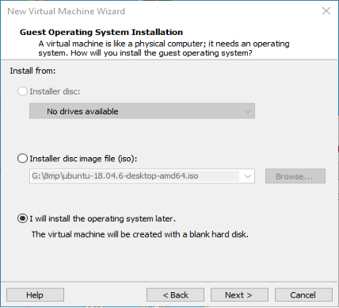
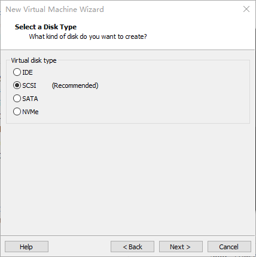
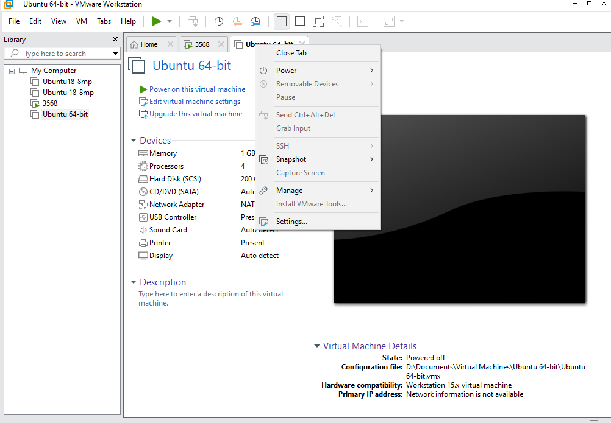

OK3576-C_Android14.0_User’s Compilation Manual_V1.0
Document classification: □ Top secret □ Secret □ Internal information ■ Open
Copyright
The copyright of this manual belongs to Baoding Folinx Embedded Technology Co., Ltd. Without the written permission of our company, no organizations or individuals have the right to copy, distribute, or reproduce any part of this manual in any form, and violators will be held legally responsible.
Forlinx adheres to copyrights of all graphics and texts used in all publications in original or license-free forms.
The drivers and utilities used for the components are subject to the copyrights of the respective manufacturers. The license conditions of the respective manufacturer are to be adhered to. Related license expenses for the operating system and applications should be calculated/declared separately by the related party or its representatives.
Overview
This manual is designed to enable you to quickly understand the compilation process of the products and familiarize yourselves with the compilation methods of Forlinx products. The application needs to be cross-compiled on an Ubuntu host before it can run on the development board. By following the methods provided in the compilation manual and performing practical operations, you will be able to successfully compile their own software code. The manual will provide instructions for setting up the environment but there may be some unforeseen issues during the environment setup process. For beginners, it is recommended to use the pre-configured development environment provided by us. This will allow you to quickly get started and reduce development time.
Linux systems are typically installed in three ways: dual system on a real machine, single system on a real machine, and virtual machine. Different installation methods have their advantages and disadvantages. This manual only provides methods to build ubuntu in a virtual machine. Computer Hardware Requirements: It is recommended to have at least 16GB memory or above.It allows for allocating a sufficient memory to the virtual machine (recommended to allocate 16GB or above), while still leaving enough resources for other operations on Windows. Insufficient memory allocation may result in slower performance on Windows.
The manual is mainly divided into five chapters:
Chapter 1. Virtual Machine software installation - introduction to downloading and installing Vmware software;
Chapter 2. provides the loading of the ubuntu system;
Chapter 3. Building, setting up, and installing necessary tools for the Ubuntu system and common issues in development environments;
Chapter 4. mainly focuses on the deployment and usage of Docker containers, kernel compilation, as well as Android-related source code;
Chapter 5. is the description of android application development.
A description of some of the symbols and formats in the manual:
Format |
Meaning |
|---|---|
Note |
Note or information that requires special attention, be sure to read carefully |
üìö |
Relevant notes on the test chapters |
Ô∏èÔ∏èüõ§Ô∏èÔ∏èÔ∏èÔ∏è |
Indicates the related path. |
Blue on gray |
Refers to commands entered at the command line (Manual input required). |
Black font on gray background |
Serial port output message after entering a command |
Bold black on gray background |
Key information in the serial port output message |
// |
Interpretation of input instructions or output information |
Username@Hostname |
forlinx@ubuntu: Development environment Ubuntu account information Users can determine the functional operating environment with this information. |
Example: Search the Docker-CE version:
forlinx@ubuntu:~$ apt-cache madison docker-ce # Find the version of Docker-CE
docker-ce | 18.06.3~ce~3-0~ubuntu | http://mirrors.aliyun.com/docker-ce/linux/ubuntu/trusty/stable amd64 Packages
forlinx@ubuntu：User’ name: forlinx, host name: ubuntu, whic indicating the user forlinx is used on the development environment ubuntu for operations.#：Explanation of the instruction, no input required.apt-cache madison docker-ce：Blue font indicates the relevant commands that need to be entered manually.docker-ce | 18.06.3~ce~3-0~ubuntu：Black font is the output information after the input command, and the bold font is the key information.
Application Scope
This manual is mainly applicable to the Android14 operating system on the Forlinx OK3576-C platform. Other platforms can also refer to it, but there will be differences between different platforms. Please make modifications according to the actual conditions.
Revision History
Date |
Manual Version |
Revision History |
|---|---|---|
08/11/2024 |
V1.0 |
OK3576-C Android14_User’s Compilation Manual Initial Version |
1. VMware Virtual Machine Software Installation
This chapter mainly introduces VMware virtual machine installation, and takesVMware workstation 15 Proas an example to show the installation and configuration process of operating system.
1.1 VMware Software Download & Purchase
Visit Vmware official website https://www.vmware.com/cn.html for downloading Workstation Pro and obtaining the product key. VMware is a paid software, you need to buy it yourself, or use the trial version provided by VMware.

1.2 VMware Software Installation
Double-click the startup program to enter the installation wizard.

Click “Next”.

Check the terms in the license agreement that I accept, then click “Next”.

Modify the installation location to the partition where the software is installed on your computer, and click “Next”.

Check and click “Next”.

Check Add Shortcut and click “Next”.

Click “Install”.

Wait for the installation to complete.

Click “Finish” to try it out. For long-term usage, users need to purchase from the official site and fill out the license application.
2. Loading the Existing Ubuntu Development Environment
It is recommended for beginners to directly use the pre-built virtual machine environment provided by Forlinx, which already includes installed cross-compiler and Qt environment. After understanding this chapter, you can directly jump to the compilation chapter for further study.
Common user name:forlinx, password:forlinx
Please ask your sales representative for the download link.
There are two ways to use a virtual machine environment in VMware: one is to directly load an existing environment, and the other is to create a new environment. Let’s first talk about how to load an existing environment.
First, download the development environment provided by Forlinx. In the development environment documentation, there should be an MD5 checksum file. After downloading the development environment, you should verify the integrity of the compressed package using the MD5 checksum. (You can use an on-line MD5 checksum tool or download a specific MD5 checksum tool for this purpose). To check if the checksum in the verification file matches the checksum of the file itself. If they match, the file download is successful. If they don’t match, it suggests that the file may be corrupt, and you should consider downloading it again.
Select all compressed files, right-click and extract to the current folder or your own directory:

After unpacking, you will get the development environmentOK3576-VM15.1.0-Ubuntu22.04. OK3576-VM15.1.0-Ubuntu22.04.vmxis virtual machine file.
Open the installed virtual machine, select theOK3576-VM15.1.0-Ubuntu22.04.vmxjust unzipped, and double-click to open the startup file.
After loading, clickOpen the virtualto run and enter the system interface.
The development environment has forlinx user and root user.
User’s name
forlinx, passwordforlinx.User’s name
root, passwordroot.
3. New Ubuntu Development Environment Setup
This chapter mainly explains the building process of Ubuntu system.
Beginners are not recommended to set up a system on their own. It is recommended to use an existing virtual machine environment. If you do not need to set up the environment, you can skip this section.
3.1 Creating an Ubuntu Virtual Machine
Open VMware software and click File->Create New Virtual Machineto enter the following：

Select Custom and click “Next”.

Select the compatibility that corresponds to the VMware version, the version can be viewed inHelp->About VMware Workstation, click the “Next”.

Select to install the operating system later and click “Next”.
To keep the default, click “Next”.

Modify the virtual machine name and installation location, click “Next”.

Set the number of processors according to the actual situation.

Also set the memory size according to the actual situation (it is recommended to adjust the memory size to 20g or more).

Set the network type, the default is NAT mode, click “Next”.

To keep the default, click “Next”.

To keep the default, click “Next”.

Choose to create a new virtual disk here.

Set the disc size to 500G, select the disc form, and click “Next” to finish.

Specify the disk file, the default one here is fine.

Click “Finish” by default.

At this point, virtual machine creation is complete.
3.2 System Installation
Ubuntu version is 22.04; the introduction and development in this manual are carried out on Ubuntu22.04. Use the Tsinghua image site to download, the address is https://mirrors.tuna.tsinghua.edu.cn/ubuntu-releases/22.04/ubuntu-22.04.4-desktop-amd64.iso
Right-click on the newly created Ubuntu 64bit and select Settings from the pop-up menu.

The “Virtual Machine Settings Menu” pops up as shown below:
Click on CD/DVD (SATA), select “Use ISO image file,” browse and choose the previously downloaded Ubuntu image, then click “OK” to confirm.
After setting up the image, ensure that the network is available. Then, start the virtual machine and proceed with Ubuntu image installation.

After starting the virtual machine, wait for the installation interface to appear as shown below.

After selecting the language on the left side as shown in the figure, clickInstall Ubuntuto pop up the language selection interface. Ubuntu’s default language is English, of course, you can also choose other language, the default language can also be reset at a later stage, select Complete and clickContinue.
Use the default keyboard layout, clickContinue.
Click Continue.

Click Continue.
Set the user name and password, click Continue, and wait for the installation to complete.
3.3 System Settings
3.3.1 Virtual Memory Settings
Some platforms require a large amount of memory when compiling. If the total memory of the computer is not large, resulting in only 8GB or less allocated to the virtual machine, the compilation may fail. Now, you can set swapfile to use a portion of the hard drive space as memory. Hard disc read/write speeds are much less than memory read/write speeds, so using virtual memory will inevitably lead to performance degradation. Try to use physical memory as much as possible.
The memory allocated when creating the virtual machine is 8GB. If the 8GB memory is not enough during compilation, the size of the swapfile needs to be modified.
forlinx@ubuntu:~$ sudo swapoff /swapfile
forlinx@ubuntu:~$ sudo dd if=/dev/zero of=/swapfile bs=1G count=32
forlinx@ubuntu:~$ sudo mkswap /swapfile
forlinx@ubuntu:~$ sudo swapon /swapfile
3.3.2 Network Configuration

3.3.3 NAT Connection Method
By default, after the virtual machine is installed, the network connection method is set to NAT, which shares the host machine’s IP address. This configuration does not need to be changed when performing tasks like installing dependencies or compiling code.
When the VMware virtual NIC is set to NAT mode in a virtual machine, the network in the Ubuntu environment can be set to dynamic IP. In this mode the virtual NAT device and the host NIC are connected to communicate for Internet access. This is the most common way for our VM to access the external network.
3.3.4 Bridge Connection
When the VMware virtual NIC device is in bridge mode, the host NIC and the virtual machine NIC communicate through the virtual bridge, and the network IP and the host need to be set in the same network segment in the Ubuntu environment. If accessing an external network, you need to set the DNS to be consistent with the host NIC. If TFTP, SFTP and other servers are used, the network contact mode of the virtual machine needs to be set as the bridge mode.
4. Android System Compilation
4.1 Preparation Before Compilation
4.1.1 Compilation Environment
Install the compilation environment. The virtual machine provided by Forlinx has been installed. This section can be skipped.
forlinx@ubuntu:~$ sudo apt-get update
forlinx@ubuntu:~$ sudo apt-get install software-properties-common
forlinx@ubuntu:~$ sudo add-apt-repository ppa:openjdk-r/ppa
forlinx@ubuntu:~$ sudo apt-get update
forlinx@ubuntu:~$ sudo apt-get install uuid uuid-dev zlib1g-dev liblz-dev liblzo2-2 liblzo2-dev lzop \
git curl u-boot-tools mtd-utils android-sdk-libsparse-utils openjdk-8-jdk \
device-tree-compiler gdisk m4 make bc fakeroot unzip zip gawk busybox libncurses5 \
libstdc++6 lib32stdc++6 bison flex python2 libssl-dev cpio lz4 rsync
forlinx@ubuntu:~$ sudo ln -s /usr/bin/python2 /usr/bin/python
4.2 Code Preparation
Copy the code (2-image and source code\1-source code) to the virtual machine/home/forlinx/work/directory and unzip it
forlinx@ubuntu:~/work$ cat OK3576-android-source.* | tar -jxv
4.2.1 Compilation
4.2.1.1 Individual Kernel Compilation
The kernel is configured as follows:
config：
rockchip_defconfig
android-14.config
OK3576-C-android.config
rk3576.config
dts：
OK3576-C-android.dts
Compilation
forlinx@ubuntu:~/work/OK3576-android-source$ source build/envsetup.sh
forlinx@ubuntu:~/work/OK3576-android-source$ lunch ok3576_c-userdebug
forlinx@ubuntu:~/work/OK3576-android-source$ ./build.sh -Ku
4.2.1.2 Individual Android Compilation
Android partial profile directorydevice/rockchip/rk3576/ok3576_c/
Compilation command.
forlinx@ubuntu:~/work/OK3576-android-source$ source build/envsetup.sh
forlinx@ubuntu:~/work/OK3576-android-source$ lunch ok3576_c-userdebug
forlinx@ubuntu:~/work/OK3576-android-source$ ./build.sh -Au
4.2.3 Fully Compiled and Packaged Image
forlinx@ubuntu:~/work/OK3576-android-source$ source build/envsetup.sh
forlinx@ubuntu:~/work/OK3576-android-source$ lunch ok3576_c-userdebug
forlinx@ubuntu:~/work/OK3576-android-source$ ./build.sh -KAup
Generated files directory is
rockdev/andIMAGE/OK3576_C_USERDEBUG_OK3576-C-ANDROID__xxxxxxxxxx/update.imgcan be used for system flashing.
4.3 OTA Upgrade Package
Full package includes entire system, incremental package contains version differences. Ensure low version is flashed on the board before using incremental upgrade.
4.3.1 OTA Full Upgrade Package
forlinx@ubuntu:~/work/OK3576-android-source$ source build/envsetup.sh
forlinx@ubuntu:~/work/OK3576-android-source$ lunch ok3576_c-userdebug
forlinx@ubuntu:~/work/OK3576-android-source$ ./build.sh -KAuop
Generated files directory is
rockdev/andIMAGE/OK3576_C_USERDEBUG_OK3576-C-ANDROID__xxxxxxxxxx/Rename
ok3576_c-ota-eng.root.ziptoupdate.zipfor full OTA upgrade
4.3.2 OTA Incremental Upgrade Package
First, release the v1.0 version image and burn it to the development board. (Both OTG and TF card flashing are OK).
forlinx@ubuntu:~/work/OK3576-android-source$ source build/envsetup.sh
forlinx@ubuntu:~/work/OK3576-android-source$ lunch ok3576_c-userdebug
forlinx@ubuntu:~/work/OK3576-android-source$ ./build.sh -KAuop
The generatedIMAGE/OK3576_C_USERDEBUG_OK3576-C-ANDROID__xxxxxxx/IMAGES/ok3576_c-target_files-eng.root.zipis v1.0 material package. For easy description, named asfiles-v1.0.zip
Modify the kernel code or Android code (upgraded to v2.0)
Same as step 1, generate a v2.0 package named
files-v2.0.zipGenerate v1.0-v2.0 incremental upgrade package.
forlinx@ubuntu:~/work/OK3576-android-source$ out/host/linux-x86/bin/ota_from_target_files -v -i files-v1.0.zip --block -p ./out/host/linux-x86 files-v2.0.zip ./v1.0--v2.0.zip
Generatedv1.0--v2.0.zipis the incremental upgrade package from v1.0 to v2.0.
Rename
v1.0--v2.0.ziptoupdate.zip, which can be used for OTA incremental upgrade (the development board needs to be a v1.0 system)
5. Ubuntu Application Development
This chapter explains how to set up the Android application development environment, including downloading and installing the Android SDK and Android Studio integrated development environment, as well as using the OK3576 development board for on-device debugging. It is highly suitable for Android beginners to learn from and refer to.
5.1 Android Studio Installation
Open3-tools\android-studio-2024.1.1.12-windows.exe
Click “Next”.
Click “Next”.
Click “Install”.
Click “Next”.
Click “Finish”.
Installation completed.
Configure sdk, click “Next”.
Click “Next”.
Click “Next”.
Select “Accept” click “Finish”.
After waiting for the download to complete, click “Finish”.
5.2 Creating New Project
Click New Project.
Select Empty View Acticity.
Modify project name and other information, click “Finish”.
For the first time, relevant SDK and other tools will be automatically downloaded, and there will be a prompt in the status bar.

If there is a JDK-related error, click Setup SDKand select the first item.
Connect the development board to the computer to ensure that the ADB can be used normally; click the Run button in the title bar to compile the project and install it to the development board to run.
5.3 Apk Platform Signature
If theopensslcommand is not available on your windows system, go to the http://slproweb.com/products/Win32OpenSSL.html to download and install it, and set the environment variables.
SELinux in the Android platform will be divided into three kinds of Apps, including those without platform signature and system privileges untrusted_app, those with platform signature and no system privileges platform_app, and those with platform signature and system privileges system_app. This chapter will introduce how to sign the apk and obtain system permissions.
5.3.1 Making Signature Document
Copybuild/target/product/security/platform.x509.pem andbuild/target/product/security/platform.pk8 in the Android system to Windows.
Open command line window to execute:
openssl pkcs8 -in platform.pk8 -inform DER -outform PEM -out shared.priv.pem –nocrypt
openssl pkcs12 -export -in platform.x509.pem -inkey shared.priv.pem -out shared.pk12 -name androiddebugkey
Enter the passwordandroid
keytool -importkeystore -deststorepass android -destkeypass android -destkeystore debug.keystore -srckeystore shared.pk12 -srcstoretype PKCS12 -srcstorepass android -alias androiddebugkey
You can modifykey-aliasandpasswordaccording to the requirements. Save the signature filedebug.keystoreto your usually use directory.
5.3.2 Andorid Studio Settings
Open “Android Studio”, add shared UID inAndroidManifest.xml:
<?xml version="1.0" encoding="utf-8"?>
<manifest xmlns:android="http://schemas.android.com/apk/res/android"
xmlns:tools="http://schemas.android.com/tools"
android:sharedUserId="android.uid.system">
Click File->project structure:
Click OK.
Add the signature configuration of debug version and release version, and click Build->Edit Build Types...in the menu bar.
Modify debug and release Signing Config, and set to $signingConfigs.debugand $signingConfigs.release respectively, and click OKto finish.
After modification, recompile and run the app. At this time, you can see that the App is run by the system user through the PS command system_app.
5.4 APK Pre-installation Method
Create a new directory in Android system:
forlinx@ubuntu:~/work/OK3576-android-source/android$ mkdir packages/apps/helloworld
Copy the apk that needs to be pre-installed (no signature required) to the directory forhelloworld.apkexample:
forlinx@ubuntu:~/work/OK3576-android-source/android$ cp helloworld.apk packages/apps/helloworld
In
packages/apps/helloworldcreateAndroid.mk
LOCAL_PATH := $(call my-dir)
include $(CLEAR_VARS)
LOCAL_MODULE := helloworld
LOCAL_SRC_FILES := helloworld.apk
LOCAL_MODULE_CLASS := APPS
LOCAL_MODULE_SUFFIX := .apk
LOCAL_BUILT_MODULE_STEM := package.apk
LOCAL_CERTIFICATE := platform
LOCAL_DEX_PREOPT := false
LOCAL_PRIVILEGED_MODULE := true
include $(BUILD_PREBUILT)
Modify
device/softwinner/ok3576-c/ok3576_c.mk, add the followings:
PRODUCT_PACKAGES += \
helloworld
Recompile the image
5.5 Getting Root Permissions
Currently only system_appcan get root privileges, need to Developer optionsopen the Root accessswitch in the relevant steps referring to “OK3576-C_Android14_User’s Manual”, app source code reference vendor/forlinx/RootChecker/.